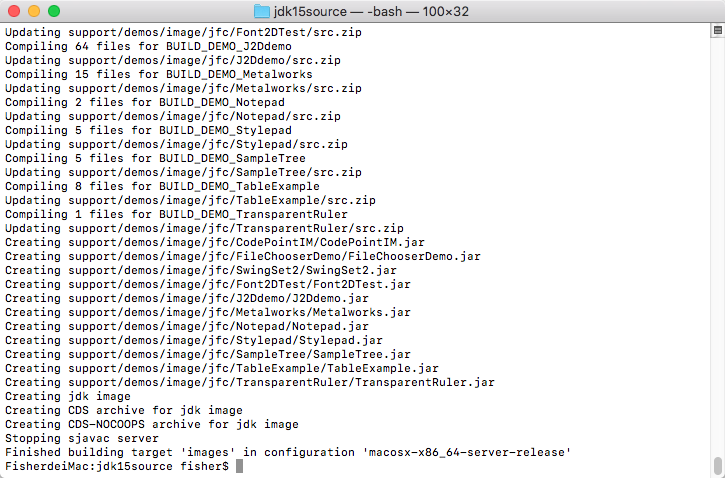

前言
考完研之后，接下来要准备的就是实习了。我也想尝试一下去春招，做好两手准备，所以需要开始学习面试要用到的知识了。我做过的比较好的项目主要使用的是Java，但之前都仅限于使用Java语言，并没有去看过Java的源码。为了深入理解Java这门语言（其实是为了准备面试），我将尝试去看Java的源码，注释写上自己的理解，并将这份源码编译，然后作为自己编译的第一个JDK使用。
前期准备
前期的准备包括以下内容：
- 源码和BootJDK的下载
- 检查和安装编译需要用到的Toolchain
源码下载
源码下载很简单，去GitHub的OpenJDK项目组里面找到需要编译的JDK版本对应的仓库，Clone下来即可
这里我编译的是JDK15，仓库地址在这里，这里我把源码Clone到Document中
1 | cd Document |
BootJDK下载
编译需要一个BootJDK，用这个BootJDK去编译一个新的JDK出来，这个就有点像鸡生蛋，蛋生鸡的问题了hh
可以用本机已有的JDK，但是如果版本太老的话也有可能出现编译失败的问题，为了保证编译能够成功，我这里下载了JDK15作为BootJDK
下载JDK的网址在这里，找到对应的系统版本点下载就好了，下载完之后解压到自己记得的地方
1 | tar -zxvf openjdk-15.0.2_osx-x64_bin.tar.gz -C /Users/fisher/Document |
检查和安装ToolChain
macOS首先需要检查安装Xcode command line tool，可以选择在App Store中直接安装Xcode，也可以在终端中使用以下命令仅安装Command line tool
1 | xcode-select --install |
接着检查clang，clang++，autoconf，make和freetype
1 | clang --version |
如果没有安装的话，使用homebrew安装即可，这里以freetype为例子
1 | brew install freetype |
其他系统的ToolChain检查安装，可以参考这份文档
配置与编译
前期准备工作完成后，就可以开始配置和编译了
配置
切换到源码的目录下，使用bash configure命令配置，这里我使用2个参数，分别是：目标系统位数，BootJDK位置
1 | cd jdk15source |
接着就开始滚屏了，如果中途出现缺少依赖等提示，安装提示安装对应的依赖即可。当看到以下界面的时候，就说明编译前的配置成功了，可以正式开始编译了
编译
在源码跟目录下使用make images命令编译，等待一段时间就可以编译完了
Linux建议系统内存要8G以上，我的虚拟机6G内存在编译到JavaDoc的时候出现了内存不足编译失败的情况

看到以上图片，就表示编译已经完成
验证编译结果
切换目录到./build/macosx-x86_64-server-release/jdk下，用./bin/java --version就能看到自己编译的成果了
接下来在IDEA中添加自己刚刚编译的JDK，将source定位到编译JDK使用的源码，在写代码和debug的时候就能够边看自己写的注释边工作了